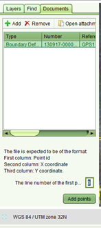

When capturing survey plan data, you have the option of loading coordinate data directly from a Comma Separated Values (CSV) text file. The file must be a plain text file containing 3 columns of data. Those columns are
Other rules that apply to the Survey Data File include
No transformation of the coordinates is performed during import. The coordinates must be in the same coordinate system as that used by the Map Viewer.
To import the CSV file, you must first attach the file as a document to the application using the Add Documents functionality available on the Documents tab of the Application Details screen. You should also select Survey Data File as the document type for the new document.
Once the CSV file has been attached to the application, Start the Change to Cadastre service and go to the Documents tab (displayed beside the Layers and Find tabs). Click the Add button to open the Select Document dialog and select the Survey Data File document from the application.
Next, select the Survey Data File document from the list of documents in the Documents tab. If the attached CSV file has a .csv file extension, then the Add points button will become enabled. Click the Add points button to add the coordinates from the file. The new survey points will be displayed on the map.

Line Number Setting for Trimble GPS Data
If the Add Points button does not become enabled when you select the Survey Data File document, verify that the document has a file attachment and that file has a .csv extension.